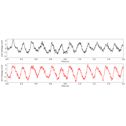
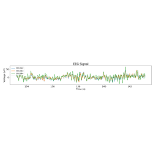
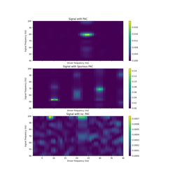

Examples¶
Below is a series of notebooks that show examples for applying cycle-by-cycle analysis.

1. Theta oscillation cycle feature distributions
1. Theta oscillation cycle feature distributions

3. MNE Interface Cycle Feature Distributions
3. MNE Interface Cycle Feature Distributions

4. PAC Cycle Feature Distributions
4. PAC Cycle Feature Distributions